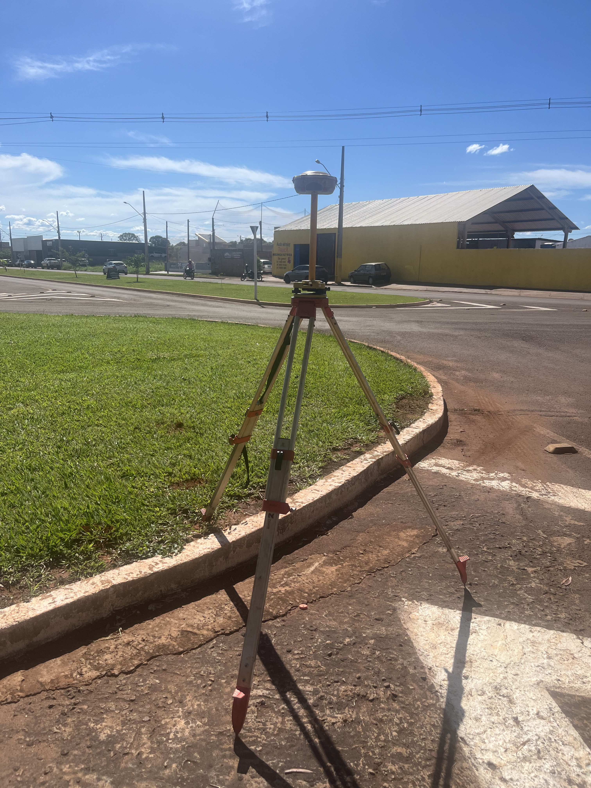

Uma das perguntas mais comuns de quem precisa medir um terreno é: quanto custa a topografia? A resposta honesta é "depende" — mas dá para entender exatamente do que depende. Veja os fatores que formam o preço da topografia.
Por que não existe um preço único por m²
Diferente de produtos prontos, o serviço de topografia é personalizado. Dois terrenos do mesmo tamanho podem ter preços bem diferentes dependendo das condições. Por isso, o preço por m² serve apenas como referência inicial.
Fatores que influenciam o preço
- Tamanho da área — quanto maior, menor tende a ser o custo por hectare
- Tipo de levantamento — planimétrico, planialtimétrico ou cadastral
- Relevo e vegetação — áreas acidentadas ou com mata exigem mais trabalho
- Acesso e localização — distância e dificuldade de chegada ao local
- Finalidade — obra, regularização, georreferenciamento, projeto
- Produtos entregues — planta, memorial, curvas de nível, volumes
Tecnologia que reduz custos
Com drones RTK/PPK, cobrimos grandes áreas em pouco tempo, o que torna o levantamento mais ágil e competitivo — especialmente em propriedades rurais e glebas extensas.
Como pedir um orçamento
Para receber um valor preciso, informe: a localização, o tamanho aproximado da área e a finalidade do serviço. Com esses dados, a AJ TopoGeo prepara um orçamento sob medida, justo e sem surpresas. Conheça nosso serviço de topografia e levantamento planialtimétrico.